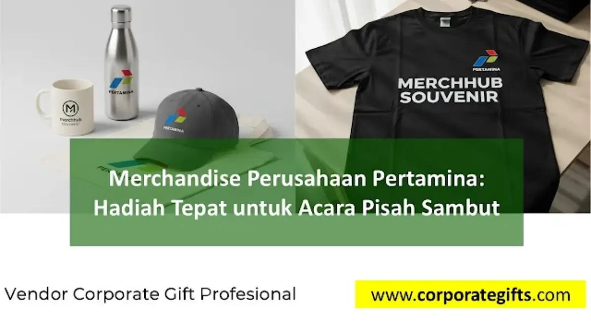

Corporate Gifts ID - Acara pisah sambut di lingkungan badan usaha milik negara berskala besar seperti Pertamina bukan sekadar seremonial formalitas rutin. Momen transisi kepemimpinan atau rotasi penugasan ini merupakan simbol penghargaan atas dedikasi kerja, penguat tali kebersamaan tim, serta strategi penting dalam menjaga citra korporat. Salah satu elemen vital yang senantiasa diperhatikan adalah pemilihan merchandise perusahaan yang bermutu tinggi.
Melalui katalog produk CorporateGifts.ID, kami menyediakan aneka pilihan souvenir custom premium dan paket gift box eksklusif yang dirancang untuk memberikan penghormatan terbaik bagi pejabat, direksi, maupun pegawai yang melangkah ke jenjang karir berikutnya.
Poin Kunci Merchandise Pisah Sambut:
- Wujud Apresiasi Tulus: Cinderamata bernilai personal menjadi wujud terima kasih nyata atas kontribusi dan pengabdian karyawan.
- Solidaritas & Identitas Tim: Pembagian souvenir seragam menumbuhkan rasa bangga dan mempererat ikatan kekeluargaan korporat.
- Standar Mutu BUMN: Pemilihan material kelas atas (SUS 304, genuine leather, kristal) mencerminkan kelas profesionalisme institusi.
- Branding Jangka Panjang: Logo yang disematkan rapi pada barang fungsional memperpanjang retensi ingatan positif.
- Prinsip Keberlanjutan (ESG): Penggunaan material ramah lingkungan mendukung visi energi hijau perusahaan.
Merchandise sebagai Simbol Apresiasi dan Penghargaan Rekam Jejak
Acara pisah sambut sering kali menjadi momentum yang sarat emosional bagi rekan kerja yang memasuki masa purnatugas (pensiun) maupun yang mendapatkan amanah baru di unit operasi lain. Dalam konteks ini, sebuah cinderamata memiliki nilai sentimental yang jauh melampaui harga fisiknya.
Merchandise yang dipersonalisasi khusus - seperti plakat kristal berukir nama, pen metal berkotak magnetik, atau executive gift set mewah - mampu menyampaikan rasa terima kasih secara elegan. Memilih souvenir yang berkualitas memastikan kenangan manis masa pengabdian akan selalu diingat oleh penerimanya.

Pilihan gift set eksekutif dan tumbler stainless kustom logo untuk seremoni pisah sambut perusahaan.
Membangun Solidaritas dan Mempertegas Identitas Perusahaan
Pada forum pisah sambut yang dihadiri seluruh jajaran divisi, merchandise juga berfungsi merajut semangat persatuan. Memberikan tumbler stainless vacuum flask berlogo seragam kepada para hadirin bukan hanya bentuk sambutan hangat bagi pejabat baru, melainkan juga simbol kesatuan gerak langkah tim kerja.
Kombinasi antara souvenir personal untuk tokoh utama yang dilepas/disambut dengan souvenir kebersamaan bagi seluruh undangan menciptakan atmosfer perpisahan yang bermartabat dan penuh rasa hormat.
Menjaga Citra Profesionalisme Standar BUMN Kelas Dunia
Pertamina memegang reputasi sebagai entitas energi nasional berkelas dunia yang senantiasa mengedepankan integritas dan standar mutu tinggi. Segala bentuk representasi fisik dalam agenda kedinasan, termasuk cinderamata resmi, harus mencerminkan standar keunggulan tersebut.
Sebuah gift set berbahan kulit sintetis premium berpadu grafir laser yang presisi memancarkan citra bonafide yang kuat, baik di mata internal pegawai maupun tamu kehormatan dari instansi mitra eksternal.
Tabel Matriks Kategori Merchandise Pisah Sambut Sesuai Jenjang Jabatan
Berikut matriks rekomendasi jenis merchandise berdasarkan target penerima pada agenda pisah sambut korporat:
| Target Penerima | Karakteristik Hadiah | Rekomendasi Item Souvenir | Teknik Personalisasi |
|---|---|---|---|
| Direksi & Pejabat Utama | Prestisius, mewah, eksklusif, memorabilia permanen | Plakat kristal optik 3D, luxury pen set metal, jam meja kayu jati ukir | Laser Engraving Nama & Gold Plating |
| Manajerial / Kepala Unit | Fungsional eksekutif, mobilitas tinggi, elegan | Executive gift set (Powerbank + Smart Tumbler + Agenda Kulit) | Deboss Logo & Laser Marking |
| Karyawan Purnabakti | Sentimental, penuh kenangan masa pengabdian | Plakat logam penghargaan masa bakti, album foto kenangan kulit, hampers eksklusif | Ukiran Tanggal & Riwayat Jabatan |
| Seluruh Undangan Hadir | Fungsional harian, ramah lingkungan, seragam | Tumbler stainless SUS 304, mug keramik sablon, tote bag kanvas tebal | Sablon Digital & Grafir Laser Logo |
Souvenir sebagai Media Branding dan Pengingat Jangka Panjang
Merchandise berlogo resmi yang digunakan dalam aktivitas harian - seperti powerbank di perjalanan dinas atau tumbler di atas meja kerja - bekerja secara konsisten sebagai sarana pengingat merek (brand recall). Kualitas produk yang awet memastikan bahwa nilai-nilai positif perusahaan akan terus terpancar dalam jangka waktu yang sangat panjang.
Menyelaraskan dengan Tren Corporate Gift Ramah Lingkungan
Dunia corporate gifting modern menaruh perhatian besar pada aspek keberlanjutan (sustainability). Mengadopsi merchandise ramah lingkungan, seperti tumbler berbahan stainless tahan karat daur ulang atau pouch kain organik, menjadi pesan nyata yang memperkuat komitmen Pertamina dalam mendukung pelestarian lingkungan hidup dan prinsip ESG global.
Kesimpulan dan Solusi Pengadaan Cinderamata
Merchandise pada acara pisah sambut Pertamina bukan sekadar bingkisan formalitas, melainkan sarana komunikasi strategis yang mengukir rasa terima kasih, memperkuat persaudaraan antarpegawai, serta menegaskan wibawa profesionalisme korporasi.
Percayakan kebutuhan pengadaan cinderamata pisah sambut instansi Anda kepada CorporateGifts.ID. Kami siap membantu mulai dari konsultasi kurasi produk, pembuatan mockup visual gratis, hingga penyiapan dokumen administrasi faktur B2B resmi. Ajukan estimasi biaya Anda melalui formulir permintaan penawaran harga sekarang juga.